Certifications
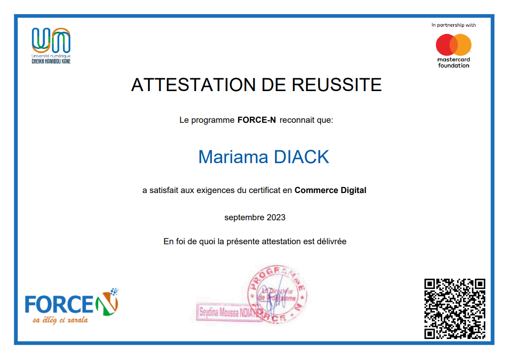
 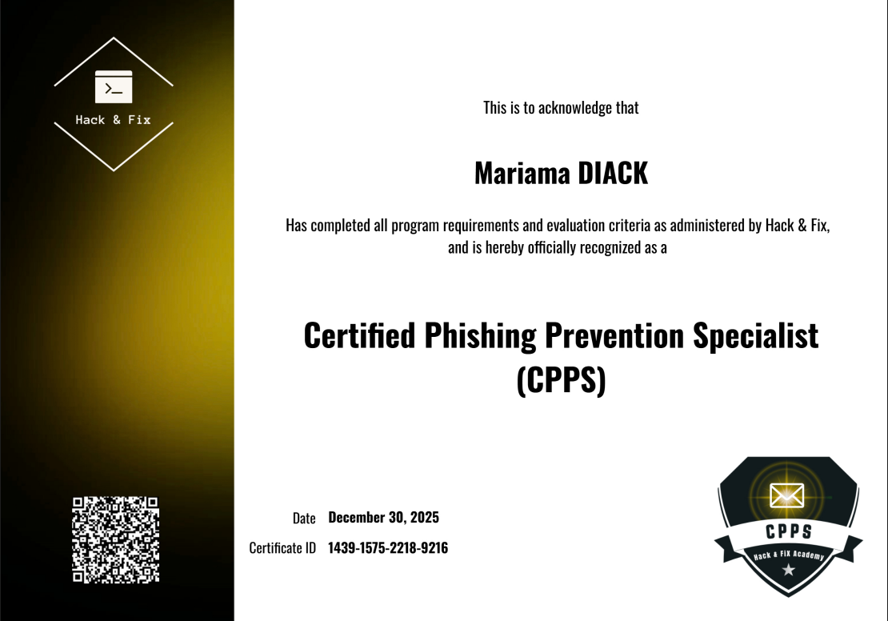
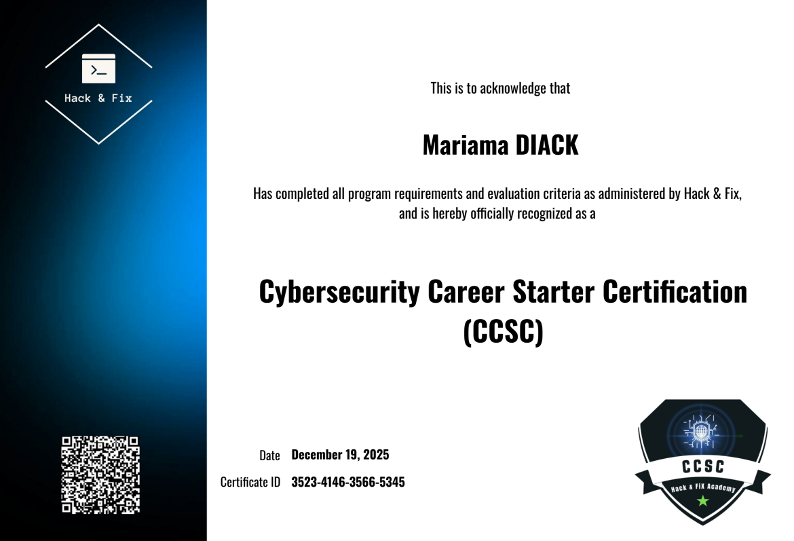
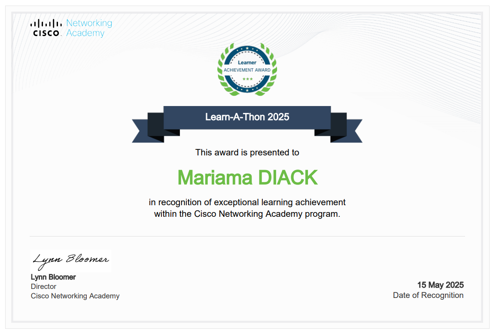
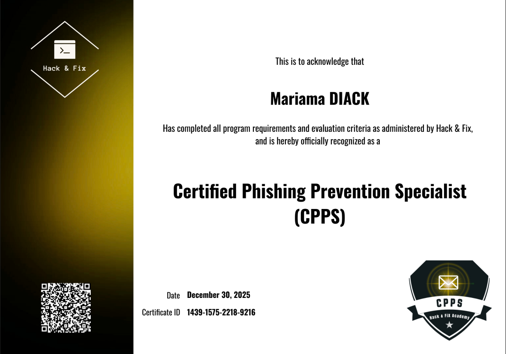
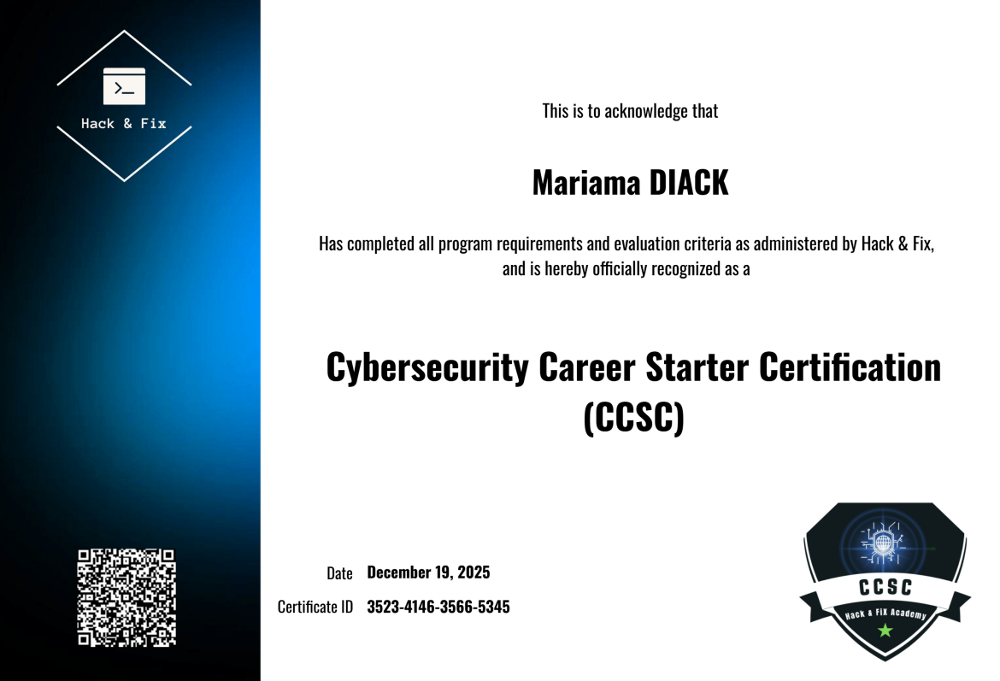
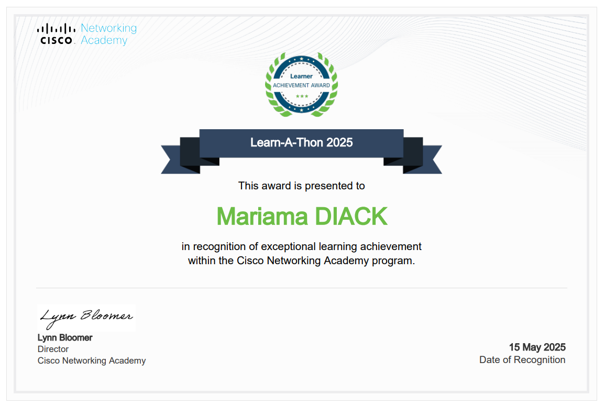
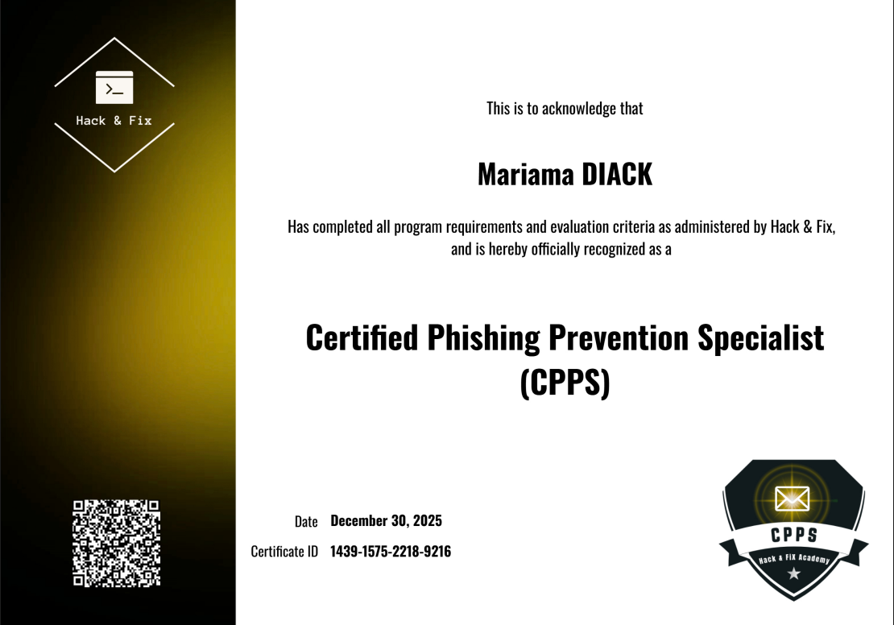
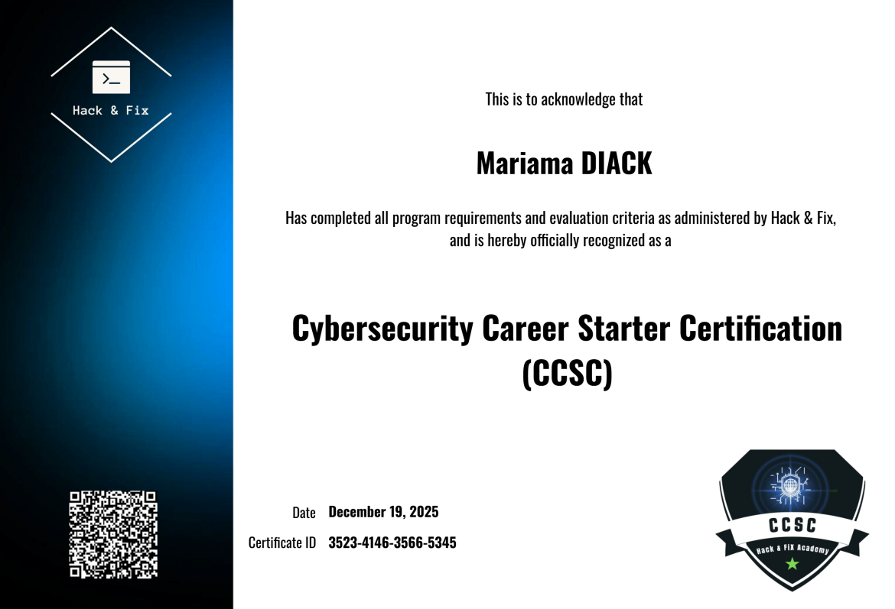
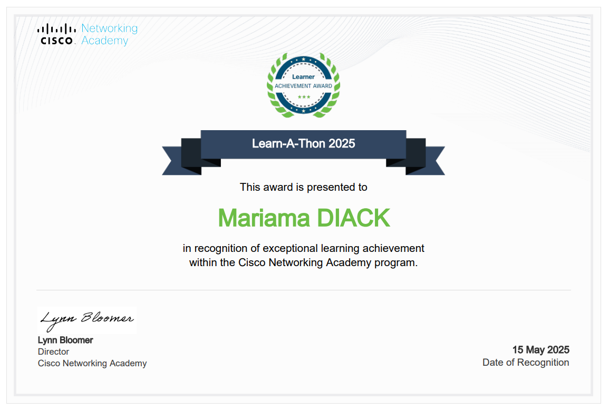
Cybersecurity Specialist
Master 2 SSI | Linux Systems & Network Security • Infrastructure Protection • Ethical Hacking
Complete security architecture with Wazuh SIEM, IDS/IPS, and real-time monitoring
Ethical hacking with Metasploit Framework and persistence techniques
Enterprise monitoring with automated alerting and multi-platform support
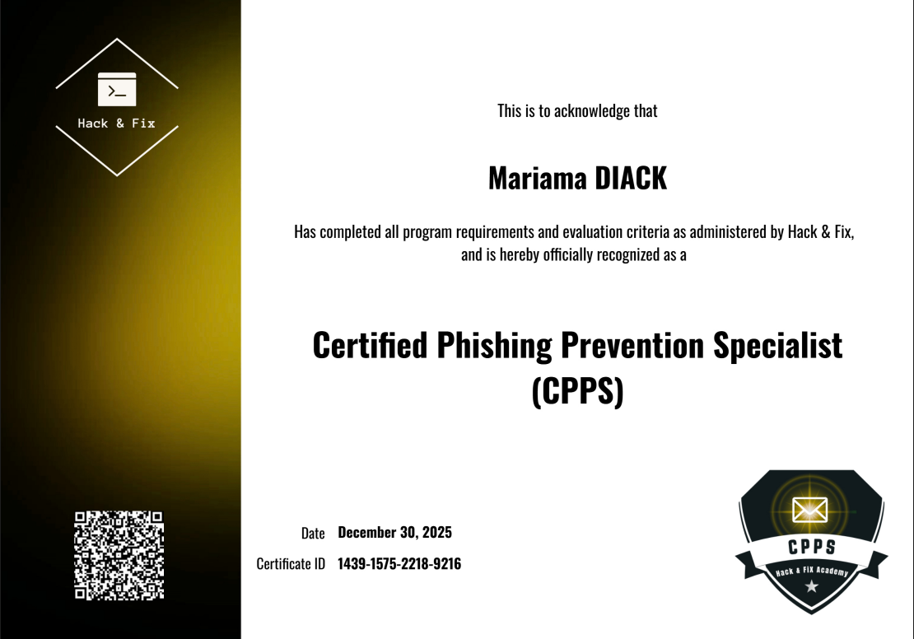
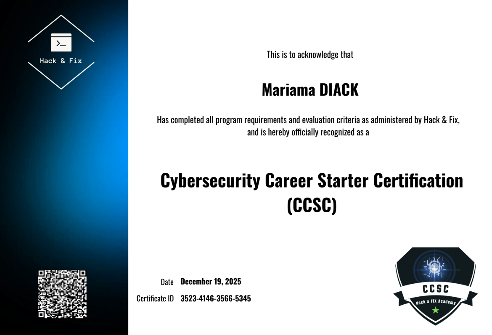
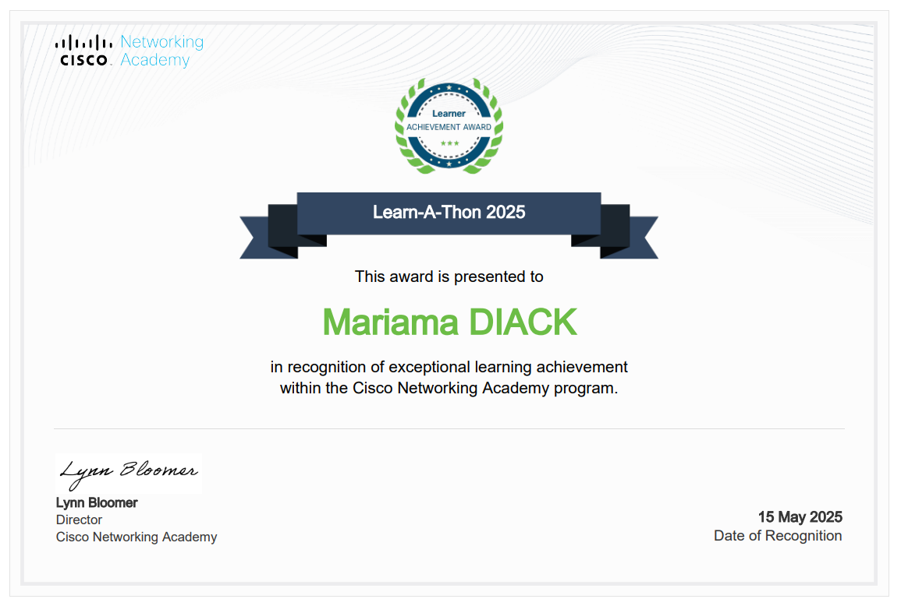
Design and simulation of a comprehensive secure network infrastructure with real-time threat detection using GNS3, Wazuh SIEM, NetAlertX, Suricata IDS/IPS, and Squid Proxy for web filtering.
Academic Project | Master 2 - Sécurité des Systèmes d'Information | 2024-2025
THIS PROJECT IS FOR EDUCATIONAL PURPOSES ONLY. All techniques were performed in a controlled lab environment with explicit authorization. These methods should NEVER be used on systems without proper authorization.
Practical implementation of Windows penetration testing techniques using Metasploit Framework, demonstrating exploitation, post-exploitation, and persistence mechanisms in a controlled ethical hacking environment.
Academic Project | Master 2 - Sécurité des Systèmes d'Information | 2024-2025
Complete deployment and configuration of essential network services on secured Linux servers for enterprise environments, demonstrating comprehensive Linux system administration skills.
Academic Projects Compilation | Master 1 & 2 - SSI | 2023-2025
Implementation of Nagios Core for enterprise-grade network and security monitoring with automated email notifications, SNMP supervision, and multi-platform support.
Academic Project | Master 1 - SSIM | 2023-2024
📧 Email: diackmariam3@gmail.com
💼 LinkedIn: linkedin.com/in/mariamd3
💻 GitHub: github.com/Mariama321